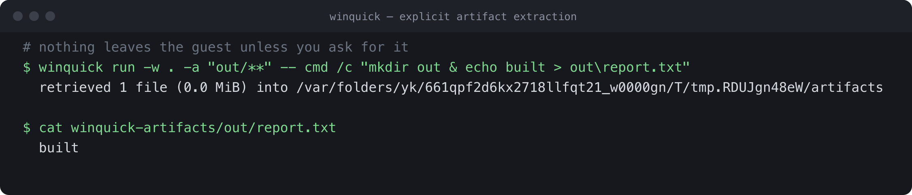

Run Windows software
Run Windows commands, .exe tools, closed-source and vendor utilities, and PowerShell. stdout, stderr and the exit code are returned unchanged.
winquick run -- pwsh -File .\build.ps1
For Apple Silicon Macs v0.5.1
Run Windows software from macOS without maintaining a Windows VM.
Use WinQuick for commands, builds, tests, desktop sessions and Windows-only tools. Each run starts clean, returns output and requested artifacts, then discards its writable state.
What you can do
Run Windows commands, .exe tools, closed-source and vendor utilities, and PowerShell. stdout, stderr and the exit code are returned unchanged.
winquick run -- pwsh -File .\build.ps1
Copy a workspace into Windows, build or test, and copy back only the artifacts you name. Modern .NET and .NET Framework, including legacy targets, with packages restored offline.
winquick build ./MyApp -c Release
Register a Windows toolchain once as a cached volume. Every later run has it on PATH without re-copying it. Verified with Go, Node, Python, Zig and a C compiler.
winquick tool add go --from ./go
Launch a desktop application that runs on Validation OS, capture screenshots, and drive the controls it exposes through Microsoft UI Automation. WPF and WinForms are verified end to end.
winquick ui-test MyApp.csproj --script smoke.uitest
A native MCP server exposes the run, desktop and UI-automation tools over stdio, for Claude, Cursor or any MCP client.
claude mcp add winquick -- winquick mcp
Each run discards its writable state; the base image and caches persist. The guest starts with no network device, and only requested artifacts are copied out.
winquick run -w . -a "bin/**" -- dotnet publish -c Release
When to use it
A traditional VM remains the right tool for interactive Windows use. WinQuick is for command-driven workflows: run a task, collect its output, and return to a clean state.
See it work
Run a Windows executable and copy back the files you name.
Build modern .NET or .NET Framework, including legacy targets, with packages restored offline.
Register a toolchain once; later runs use it from PATH without re-copying it.
UI Automation drives the controls an application exposes; other apps can still be launched and captured.
The server exposes the run, desktop and UI-automation tools over stdio.
stdout, stderr and the exit code are preserved, so shell and CI logic behave as they would on Windows.
Each run
From real runs


-a comes back to the host. Output typeset from a real run.Performance
After setup, WinQuick resumes a prepared Windows state for each run. These figures were measured on Apple Silicon M4 Pro, macOS 26, using a warm prepared guest. The first winquick setup downloads and prepares the runtime once and is not included.
cmd /c verdotnet --versiongo build to a Windows .exe100 runs of cmd /c ver gave p99 319 ms with zero failures. go build and prettier ran offline through tool volumes. Apple Silicon is the supported host; Windows and Linux are a future plan.
Desktop applications
The desktop capability starts a headless Windows desktop. Applications that run on Validation OS can be launched and screenshotted; those that expose Microsoft UI Automation can also be inspected and driven by control rather than by pixel. WPF and WinForms are verified end to end — built inside Windows, then driven. An application with no useful automation surface can still be captured, but not driven.
Desktop documentation
Install
winquick setup under Microsoft's licenceHomebrew is the supported install path. It pulls in QEMU and hivex and is not quarantined by Gatekeeper. A direct archive download is also available, but is unsigned until notarized.
brew install carlbomsdata/tap/winquick
WinQuick runs on macOS with Apple Silicon today. WHPX and KVM host code paths exist in the repository, but neither is supported or released yet.
Microsoft's Validation OS image is downloaded separately under Microsoft's licence.
winquick setup --accept-microsoft-terms
Scope